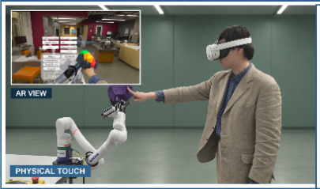
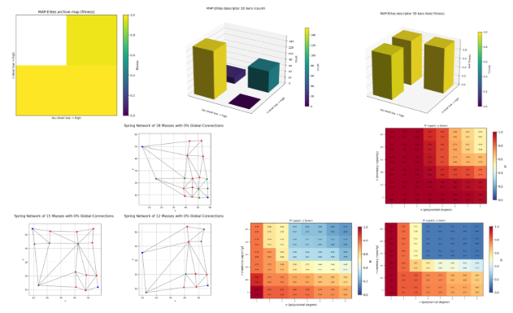
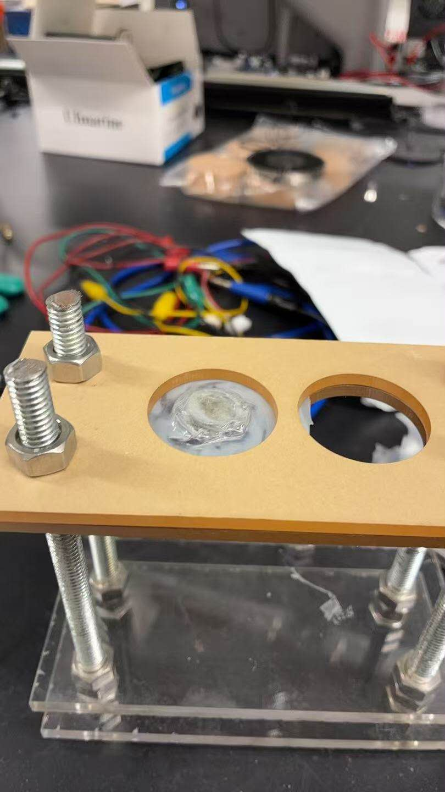
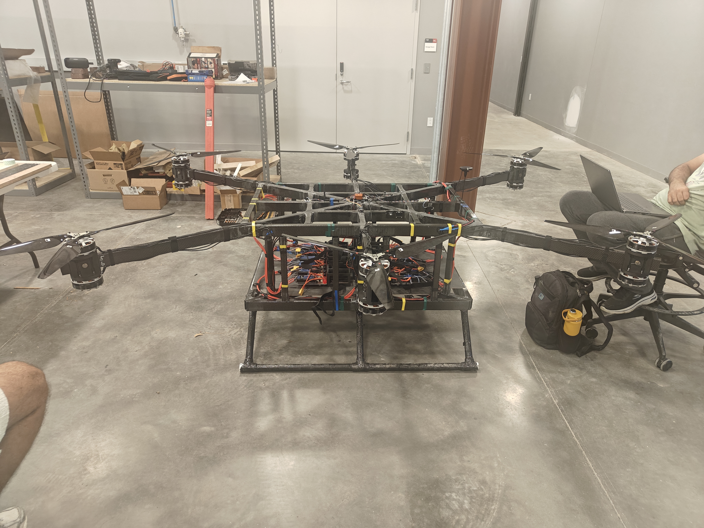

Current themes
Robotics, control, and interactive systems
Current work centers on robotic interaction, optimization-driven control, and physically meaningful user feedback.
MECHANICAL ENGINEERING · ROBOTICS · CONTROL
I am Nan An, a mechanical engineer developing robotic touch interfaces and mechanical computing systems through physical design, control, and optimization.
About
My research at Carnegie Mellon University spans robotic touch rendering, tunable material surfaces, and mechanical computing. I combine physical design with control, optimization, computer vision, and machine learning. My earlier work includes a robotic energy-storage demonstrator at Lehigh University, mechanical design internships, and power-system integration for a GoAERO aircraft.
I am interested in robotics, haptics, augmented reality, and human-computer interaction: systems that let people interact with digital information through physical motion and touch.
Current themes
Current work centers on robotic interaction, optimization-driven control, and physically meaningful user feedback.
Engineering approach
I focus on problems where mechanics, materials, electronics, and computation must be coordinated as one system.
Technical tools
My toolkit supports analysis, prototyping, modeling, and implementation across research and course projects.
Selected work
Five projects and two industry experiences show my contributions to robotics, computation, and mechanical design. Open the project pages for methods, results, and supporting media.

Graduate Research · Carnegie Mellon University
Virtual objects need physical contact to feel tangible. In Prof. Majidi’s group, I am developing a robotic interface for freehand touch feedback using Quest/Unity, ROS 2, and a Kinova arm. The system combines constrained motion control, validated surface transitions, and a modular contact interface. Reported experiments achieved 46–49 Hz with the parallel controller; the continuous-surface configuration achieved 94.6% virtual and 93.0% physical accepted-target tracking success. These results support the contact-control pipeline; full shape, hardness, and texture rendering remains under development.
Research participant · Prof. Majidi · Mar 2026–present
Developing robotic touch interaction through optimization, control, computer vision, and hardware integration. The presented interface has 21 local geometric features and 11 material mounts.
Reported evaluation: 46–49 Hz parallel control; 94.6% virtual / 93.0% physical continuous-surface accepted-target success. These are tracking metrics, not perceptual fidelity scores. Source: Hybrid Tactile Rendering, slides 23 and 27–28.

Graduate Research · Carnegie Mellon University
Mechanical structures can process information through their physical responses. Working with Prof. Wang, I investigated design parameters that influence this computational capacity. I used genetic algorithms and quality-diversity methods to identify mechanical topologies with different memory and nonlinear capacities. This preliminary study identified topologies for module-library preparation; comparative capacity metrics are not available here. The work connects physical structure design to future computing capabilities.
Research participant · Prof. Wang · Sep 2025–May 2026; experimental studies of computational capacity.
Genetic-algorithm and quality-diversity exploration of mechanical topologies; preliminary module-library preparation.

Graduate Research · Carnegie Mellon University
A reconfigurable surface must change shape and maintain the desired texture. In Prof. Majidi’s group, I am developing a thermally tunable, magnetically actuated unit cell for texture simulation. I investigate magnetized silicone rubber and how heating changes polymer behavior and mechanical properties. The unit cell remains under development, with deformation and retention performance still to be documented. Its goal is a reconfigurable surface for physical touch feedback.
Research participant · Prof. Majidi · Sep 2025–present
Magnetic actuation, thermally tunable polymers, and shape retention for reconfigurable surface textures.

Course Project · Carnegie Mellon University
A twelve-rotor aircraft requires its power system to work as part of the complete vehicle. For a GoAERO course project advised by Prof. Sheer and Prof. Willits, our team designed and built a dodeca-rotor drone. I held primary responsibility for power-system design and integration. The team built the aircraft, and my contribution connected power-system design to vehicle integration. The workshop photograph documents the assembled platform, propulsion units, and wiring; my contribution focused on power-system design and integration.
Primary responsibility for power-system design and integration · Sep–Dec 2025.
Team aircraft design and build · Advisors: Prof. Sheer and Prof. Willits.
Research Assistant · Lehigh University
Gravitational energy storage uses an elevated mass to store energy. As a research assistant at Lehigh University, I worked on developing and building a demonstrator that integrates robotics with this storage principle. My contribution focused on the integrated demonstration system, linking robotic operation with a physical energy-storage concept. The work produced contributions to an integrated demonstrator; storage capacity and efficiency remain unquantified in the supplied project record.
Research assistant · Mechanical Engineering & Mechanics · Feb–Aug 2025; demonstrator development and build.
Makes a robotic energy-storage concept tangible through an integrated demonstration system.
Experience
Master of Science in Mechanical Engineering
Aug 2025–May 2026. Coursework: Modern Control Theory, Advanced Optimization, Soft Robotics, and Deep Learning System.Research Assistant · Department of Mechanical Engineering & Mechanics
Feb–Aug 2025. Worked on developing and building an integrated robotic gravitational energy-storage demonstrator.Mechanical Design Intern
Jun–Jul 2024. To support customized product development, I constructed CAD models of product components and helped design mechanical structures and build sample machines. My work connected component geometry with physical prototyping. The outputs were component models and contributions to sample-machine construction; performance improvements were not quantified.Research & Development Intern
Mar–May 2024. Bearing development requires clear design documentation and quality assessment. I constructed CAD models and engineering drawings of bearing designs and assisted with quality analysis of sample products. My contributions supported design communication and product assessment; the CV provides no defect-rate or accuracy measurements.Bachelor of Science in Mechanical Engineering · GPA 3.71/4.0
Aug 2021–Dec 2024. Dean’s Honor List seven times; inducted member of the National Society of Leadership and Success.Skills
Methods include genetic algorithms, quality-diversity exploration, computer vision, machine learning, and experimental parameter studies.
Résumé
Education, research, and engineering experience updated from the supplied CV.
Mechanical Engineering · Robotics · Control
M.S. in Mechanical Engineering
B.S. in Mechanical Engineering · GPA 3.71/4.0
Prof. Majidi · Mar 2026–present. Robotic touch interface; reported parallel control at 46–49 Hz and continuous-surface accepted-target success of 93.0% physical / 94.6% virtual. Tunable texture research since Sep 2025.
Prof. Wang · Sep 2025–May 2026. Experiments, genetic algorithms, and quality-diversity methods for mechanical computing topologies.
Research Assistant · robotic gravitational energy-storage demonstration.
Mechanical Design Intern · CAD modeling and mechanical structures.
R&D Intern · CAD models, drawings, and quality-analysis measurements.
CAD · Python · MATLAB · Optimization · Application Development · Control Methods
Contact
I welcome conversations about research and engineering opportunities in robotics, haptics, mechanical computing, and human-computer interaction.
Email anan81751@gmail.com
Phone (518) 256-2030
Location Pittsburgh, Pennsylvania
Interests Robotics · Haptics · HCI